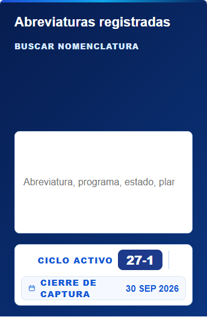
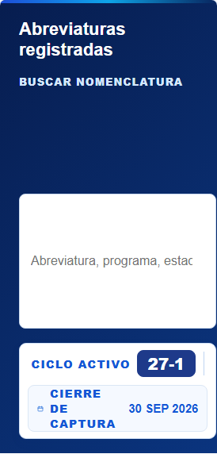

Capturas de Chromium con datos ficticios aislados. A cada tamaño se compara Nomenclaturas real con Usuarios corregido; no se alteraron las imágenes. Inspección técnica de Codex: aceptación visual del propietario pendiente.
Se reutilizan el degradado, la línea superior, la tipografía del alta y la paleta de botones. Usuarios conserva su composición y su buscador sobre blanco. Nomenclaturas conserva su buscador dentro de la franja y sus botones de archivo verticales.


La tabla conserva su desplazamiento horizontal y la navegación global no fue modificada. Sin cambios de permisos, datos, modales ni lógica. Permanecen el límite administrativo de 200 documentos y los 18 incumplimientos de R02/R03.